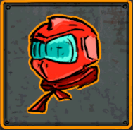
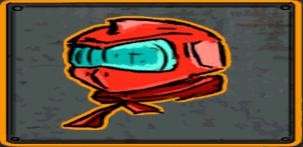
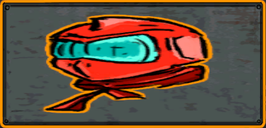
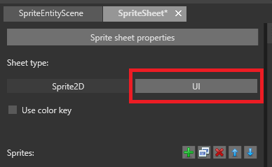
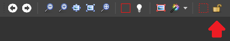

スプライトの境界の設定
初級 デザイナー
スプライトの境界は、スプライトを拡大縮小したときに変形しない領域です。メニュー ボタンなどの UI 要素に使用するスプライトに役に立つことがよくあります。スプライトの境界を設定できるのは、UI シートの種類として設定されているスプライトだけです。
| 元のスプライト | 境界のない拡大縮小 | 境界のある拡大縮小 |
|---|---|---|
|  |  |  |
最終的な画像で、スプライトの境界によってスプライトの変形の端が止まっていることに注意してください。スプライトの内部は拡大縮小されています。
スプライトの境界を設定する
スプライト エディターで、［Sheet type］を［UI］に設定します。

Note
この設定は実行時のスプライトのレンダリング方法には影響を与えませんが、スプライトの境界など、設定できるプロパティが少し異なります。
［Sprites］の一覧から、スプライトの境界を追加するスプライトを選択します。
スプライトのテクスチャ領域が正しいことを確認します。詳細な方法については、「スプライトを編集する」を参照してください。

スプライト エディターのツールバーで、［Sprite border resize］ツールを選択します。

スプライトの境界を目的の位置にドラッグします。
Note
既定では、スプライトの境界はスプライトのテクスチャ領域と一致します。
Tip
Ctrl キーを押しながらマウス ホイールを回してズーム イン/アウトすると、正確に選択できます。
スプライトの境界をロックする
既定では、テクスチャ領域のサイズを変更するとスプライトの境界は移動します。移動しないようにするには、ツールバーの［Lock the sprite borders］をクリックします。

Note
スプライトの境界は、常に、テクスチャ領域の内部に留まっています。